Rainbow Lorikeet
Trichoglossus moluccanus
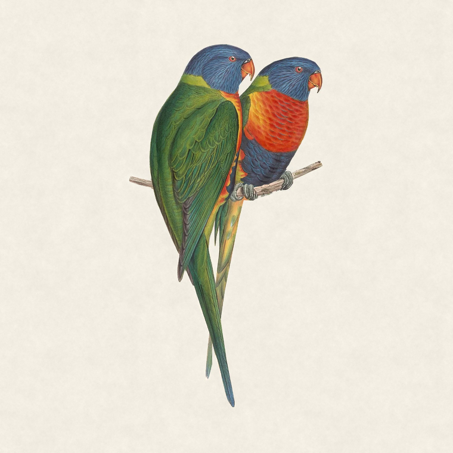
Retain complete original overlapping pair. Round the two clipped perch ends using alpha only. Replace 48px angular backing with 18px rounded backing sampled from original paper. Source-space alpha removal of retained leaf tip behind right breast; supporting branch remains connected. Fresh-audit repair: removed the remaining detached leaf tip above the right-hand perch using source alpha only; original feet, plumage and bark untouched.
Historical source · Large preview · Final image
Rose Robin
Petroica rosea
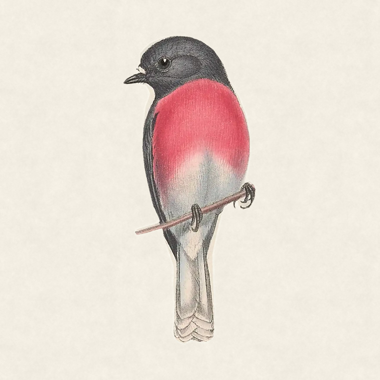
Re-traced the complete male with smooth tighter crown, body and tail outline. Replaced angular paper margin with a rounded background-only halo and rounded the short retained vine end. Original white forehead marking, bill, belly, full tail and visible claws preserved. Restored the original small hooked claw below the perch, left of the right-hand foot; source-alpha addition only.
Historical source · Large preview · Final image
Laughing Kookaburra
Dacelo novaeguineae
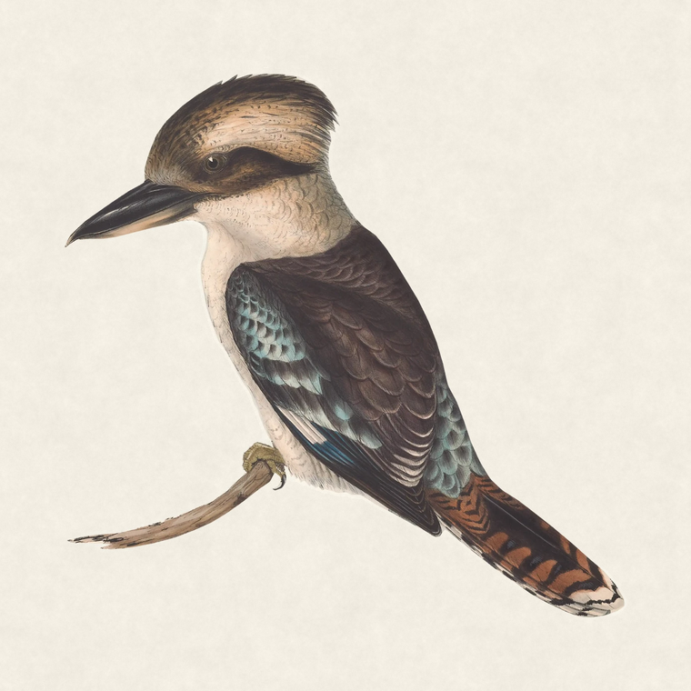
Re-traced bill underside, crown, neck, back and breast at source resolution using rounded contour interpolation. Restored original fine lower-belly feather fringes that the previous coarse polygon omitted. Kept the original complete tail, gripping foot and connected natural branch end. Narrow original paper remains beside fine feather/perch drawing; no background colour threshold was applied to pale anatomy. Corrected the scan-paper ribbon above the curved perch with a dense source-resolution alpha contour following the naturally irregular bark into the gripping foot. Source pigments are unchanged; original edge strokes are protected at curve joins. Removed two small scan-paper remnants beside the foot.
Historical source · Large preview · Final image
Magpie-lark
Grallina cyanoleuca
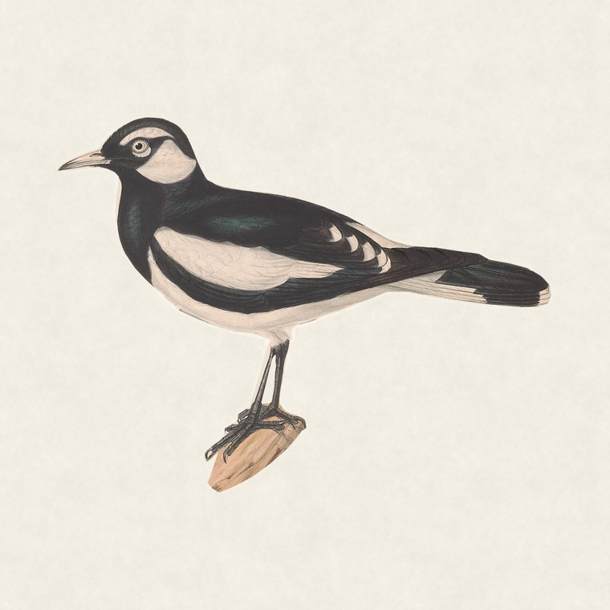
Removed the incorrectly retained green leaf strip along the left breast by tracing the illustrated bird contour. Rounded the selected connected branch ends and outer paper margin. Preserved both legs, feet, white plumage and original printed feather drawing; original negative space between legs is open in the source mask. Removed the isolated background-trunk wedge under the belly; original pale belly and thigh preserved.
Historical source · Large preview · Final image
Superb Fairywren
Malurus cyaneus
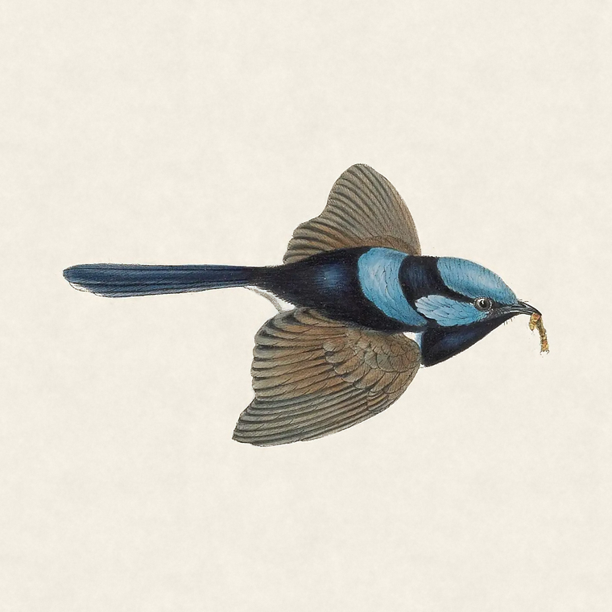
Preserve bird, complete spread wings, tail, bill and carried food. Expand original source paper smoothly to form a narrow allowance, avoiding synthetic backing.
Historical source · Large preview · Final image
Uncertain detail deferred by you; image unchanged.
Yellow-faced Honeyeater
Caligavis chrysops
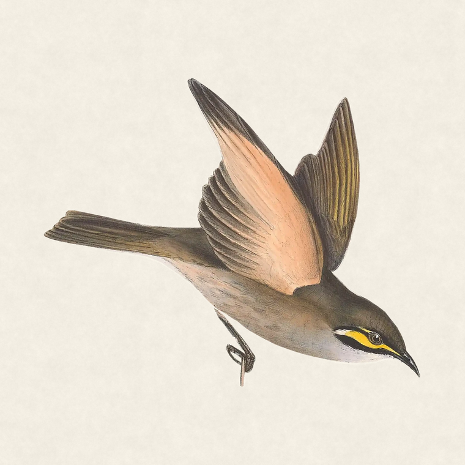
Closely re-traced raised wings, tail, belly and original gripping toes; removed broad mismatched paper strips and leaf scraps. Retained a short original twig beneath the toes.
Historical source · Large preview · Final image
Crimson Rosella
Platycercus elegans
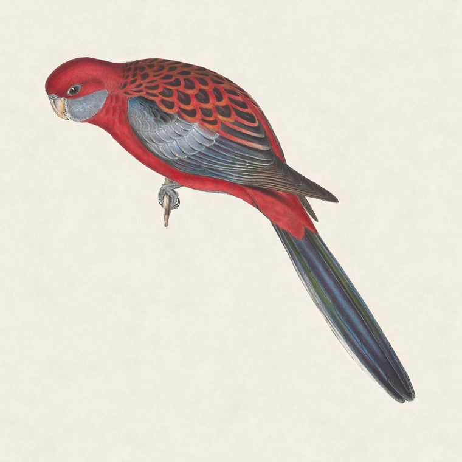
Preserve full foreground adult and its own gripping foot. Round the short perch end using alpha only and remove a disconnected green sprig immediately below the claw. Replace angular backing with 18px rounded backing matched to source paper. Removed parent-review-confirmed branch spur under throat; rounded remaining perch bottom after trimming sprig.
Historical source · Large preview · Final image
Brown Thornbill
Acanthiza pusilla
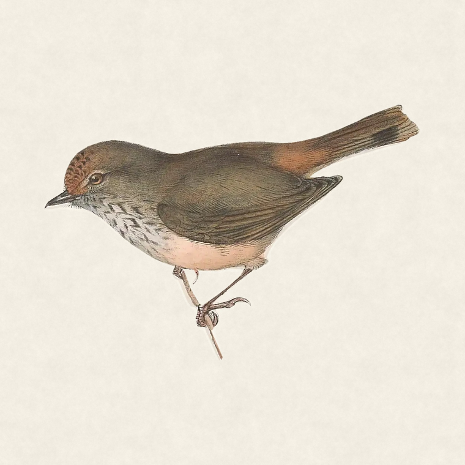
Re-traced original crown to remove branch stump; restored original toes and fine hooked foretoe; retained coherent short twig with rounded end; no erased body interiors. Restored the source-backed missing claw/toe material identified by the fresh edge audit.
Historical source · Large preview · Final image
Olive-backed Oriole
Oriolus sagittatus
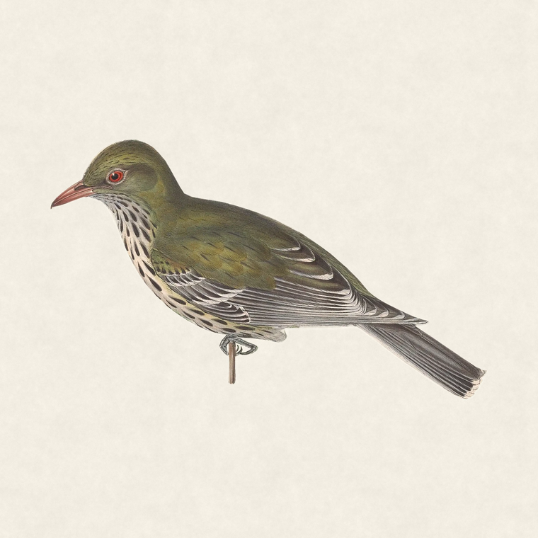
Rebuilt full body contour to restore original lower belly and remove upper-neck leaf scraps. Restored complete gripping foot/claw from original and retained a rounded short perch. Restored the source-backed missing claw/toe material identified by the fresh edge audit.
Historical source · Large preview · Final image
Little Wattlebird
Anthochaera chrysoptera
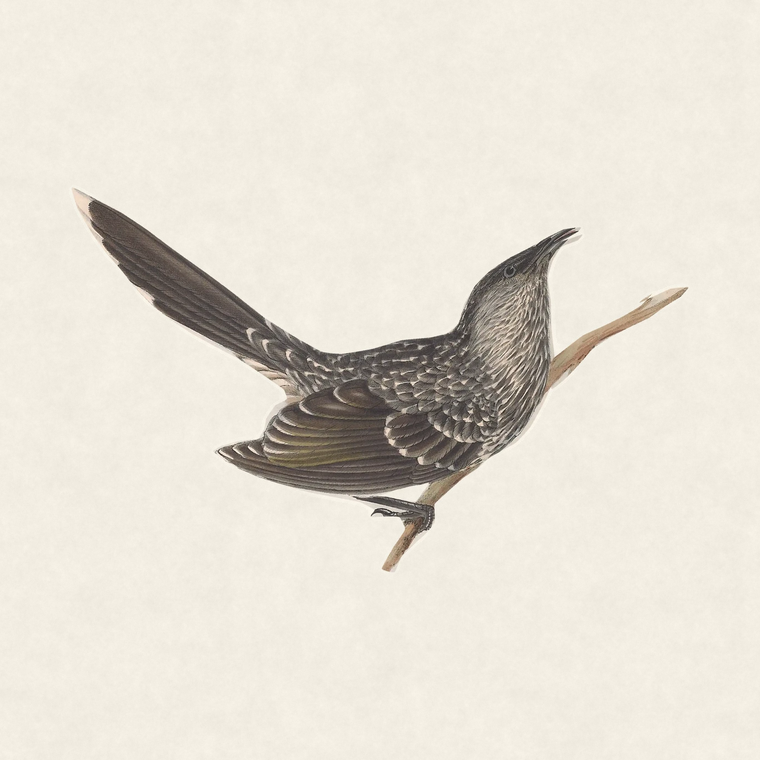
Restored the original upper supporting branch through to its natural split tip, so the former diagonal sliver now has coherent context. Rounded the paper margin and refined the visible toe contour; pale tail tips and original open bill remain. Small source-paper negative spaces around foot and wing remain conservatively retained. Removed retained source paper inside the wing/leg/perch gap, preserving original lower-wing and leg pigments.
Historical source · Large preview · Final image
Australian Magpie
Gymnorhina tibicen
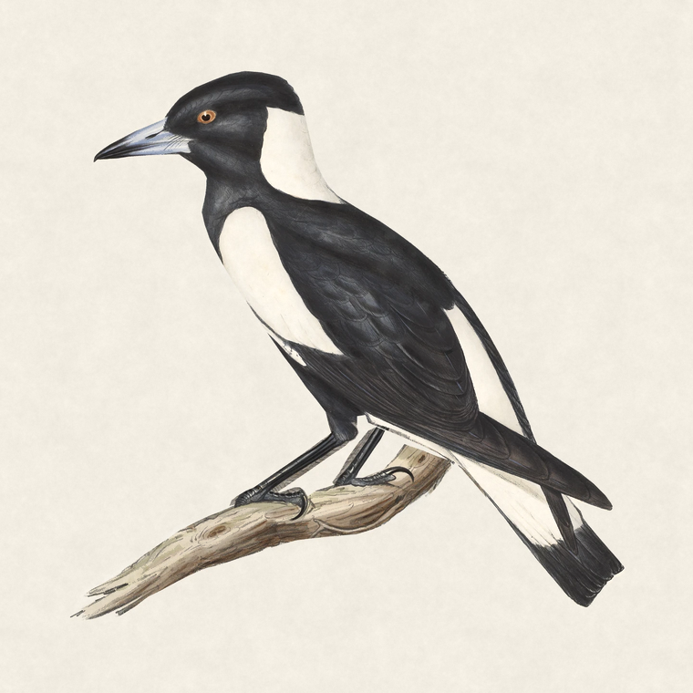
Use the submitted complete-tail KU scan and v4 source mask, not the older cropped BHL selection. Preserve full adult, both legs and toes, original ragged perch. Remove a sliver of the larger background branch beside the tail. Replace angular backing with 18px rounded paper-matched backing. Filled pinholes in separate paper underlay between legs. Original white/black diagonal tail-feather edge under wing retained as anatomy; adjacent background branch sliver removed. Restored the original dark front toe material removed by the accidental angular hole, using original-source alpha only. The genuine pale diagonal tail stripe is unchanged.
Historical source · Large preview · Final image
Sulphur-crested Cockatoo
Cacatua galerita
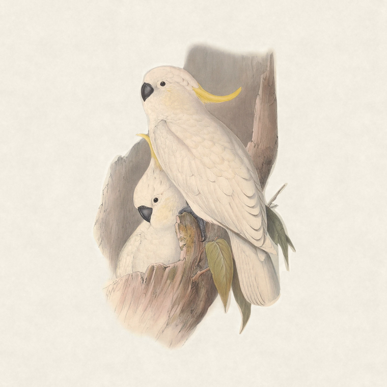
Restored both original cockatoos with connected tree and leaves. Removed page margins and caption with a smooth alpha boundary. Source RGB master preserved; explicitly exterior paper is conventionally matched in renderer input. The former abrupt upper-tree and lower-tree paper fade switches now blend continuously.
Historical source · Large preview · Final image
Galah
Eolophus roseicapilla
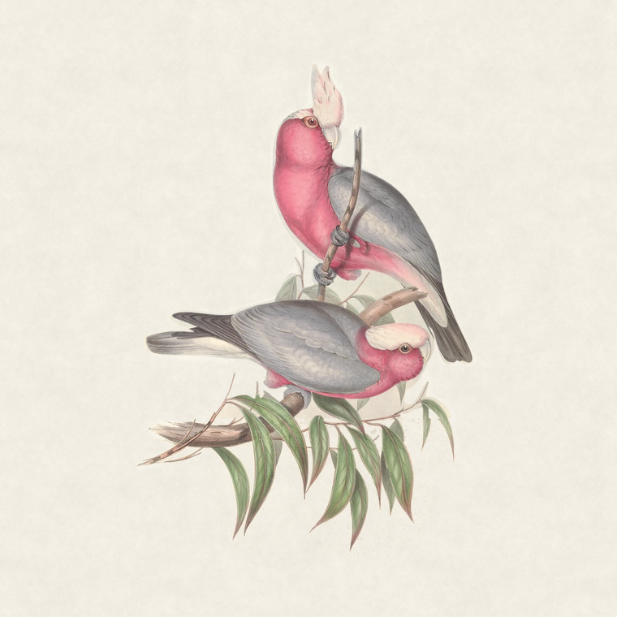
Restored the complete connected historical composition so the branch crossing the tail is no longer an isolated fragment. Removed caption and page margins without inventing hidden feathers. Fresh-audit repair: source-paper-only matching beneath lower tail and around heel, with both fine original twig tips explicitly protected at remeasured source coordinates.
Historical source · Large preview · Final image
Noisy Miner
Manorina melanocephala
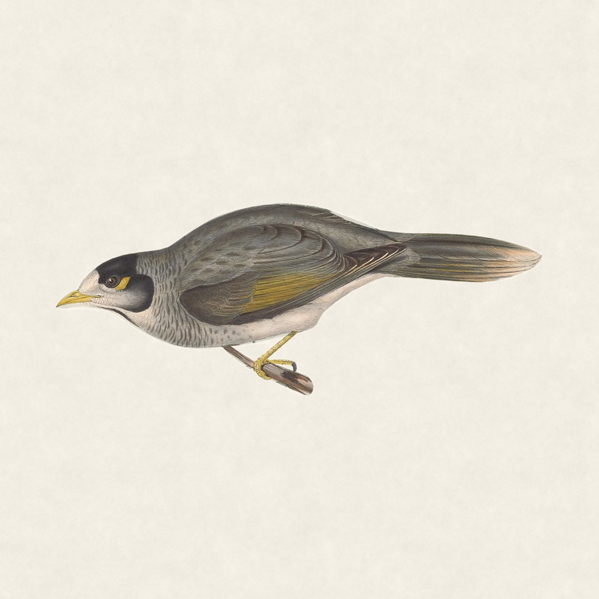
Re-traced full pale breast and back, restored original curled toes and rear claw rather than cropping to the branch. Retained coherent branch with rounded end. Restored original perch wood below the extended front claw, reestablishing original contact through source alpha only.
Historical source · Large preview · Final image
Uncertain detail deferred by you; image unchanged.
Common Myna
Acridotheres tristis
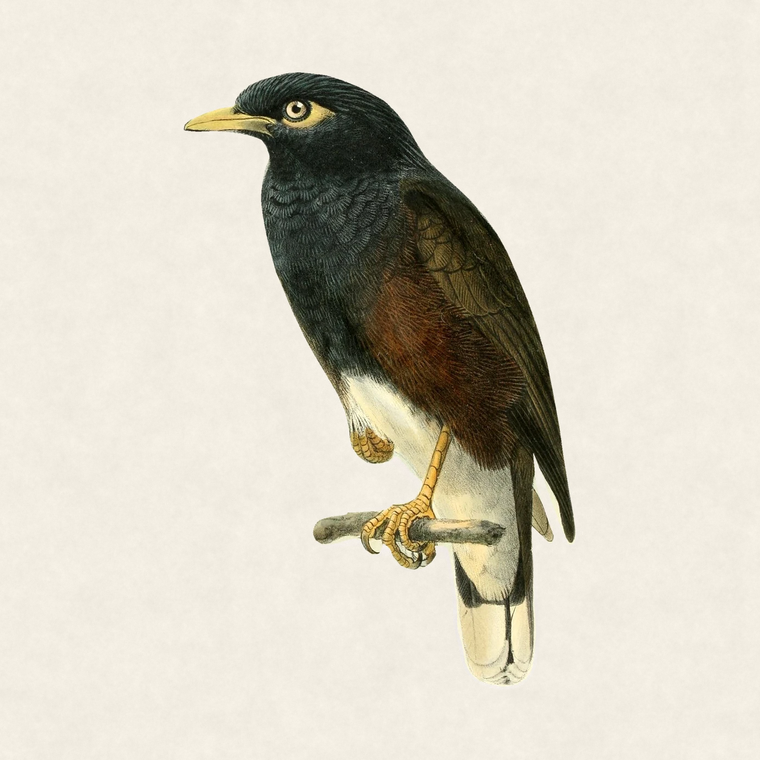
Rounded the source perch left end through alpha-only curved trimming, with no invented wood or pigments. Both visible feet, pale belly, wing and tail tips preserved from the same submitted Legge scan. Matched the explicitly traced source-paper wedge between raised foot, belly and standing leg, plus the paper strip under the left perch, to the neutral halo. No feet, belly or perch pigments were painted. The independently retained source-RGB master and alpha mask remain byte-identical to the preceding revision.
Historical source · Large preview · Final image
Australian Ibis
Threskiornis molucca
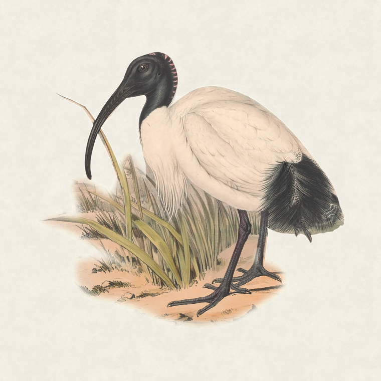
Foreground Ibis retained with coherent original reed clump and softly faded original ground patch. This preserves all fine breast plumes at their authentic grass overlaps. The rear Ibis is excluded. No generated anatomy, pigment repaint, or invented scenery.
Historical source · Large preview · Final image
Crested Pigeon
Ocyphaps lophotes
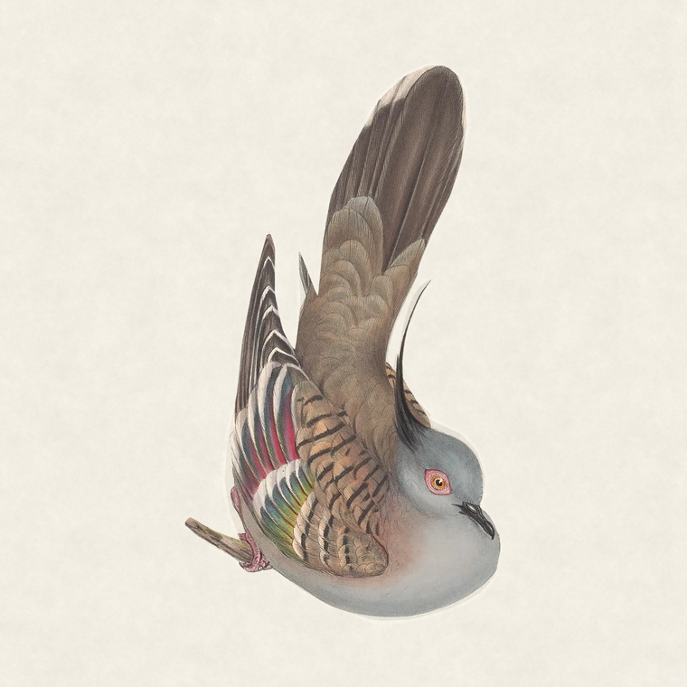
Restored the complete original slender crest that lay outside the old mask. Restored adjoining original tail/plumage edge after checking source pixels along the narrow crest corridor. Rounded mask and halo edges; original head-down posture, wing colour, visible foot and perch remain. No new crest pixels were painted or generated: the selected ink is from the archived original scan. Restored continuous original chest beneath the bill; retraced short left perch to actual bark boundaries, removing retained paper strip and restoring omitted upper bark.
Historical source · Large preview · Final image
Red Wattlebird
Anthochaera carunculata
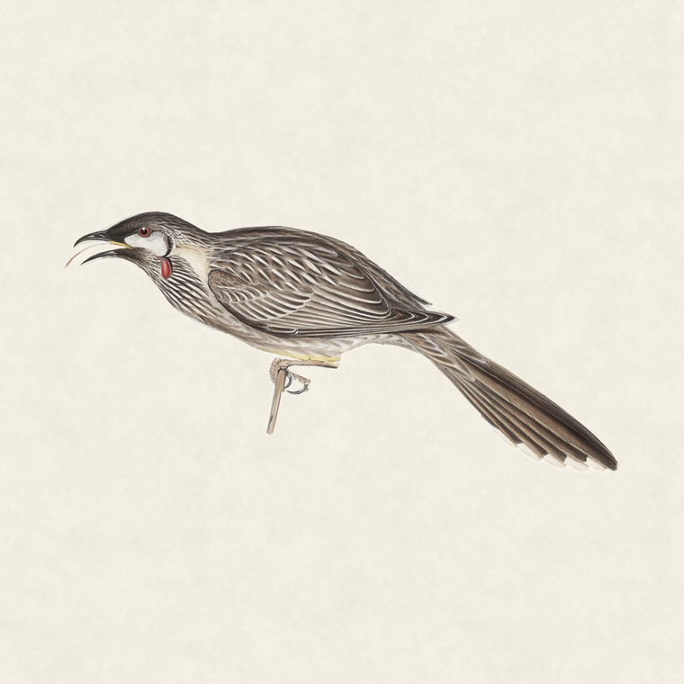
Rebuilt complete body mask from original, restoring all prior accidental interior gaps. Traced tongue, tail fans, belly and upper back to remove hanging leaf fragments. Original claw restored and coherent short perch retained. Removed the final two upright background stem ends at upper back source-reference x824-830, preserving the adjacent original feather contour. Restored the source-backed missing claw/toe material identified by the fresh edge audit. Restored the genuine pale tail-feather terminal tips; original feather strokes and source RGB remain unchanged.
Historical source · Large preview · Final image
Tawny Frogmouth
Podargus strigoides
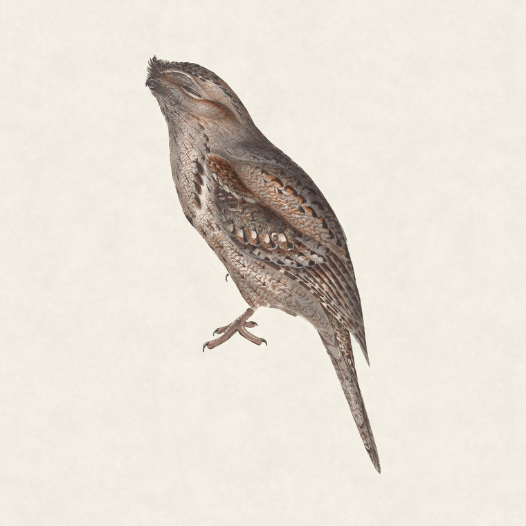
Preserve exact source-space feet-v3 toe/claw mask. Trim a narrow residual source-paper wedge on right wing only. Replace angular backing with 18px rounded paper-matched backing.
Historical source · Large preview · Final image
Yellow-tailed Black-Cockatoo
Zanda funerea
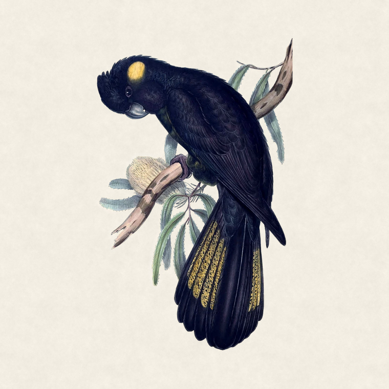
Retain the complete bird and original botanical scene. Use narrow rounded backing matched to source paper: the wider authentic paper trial produced a cyan fringe in the stock renderer. Native Gutenberg scan remains 836x1315; higher-resolution review is separately possible.
Historical source · Large preview · Final image